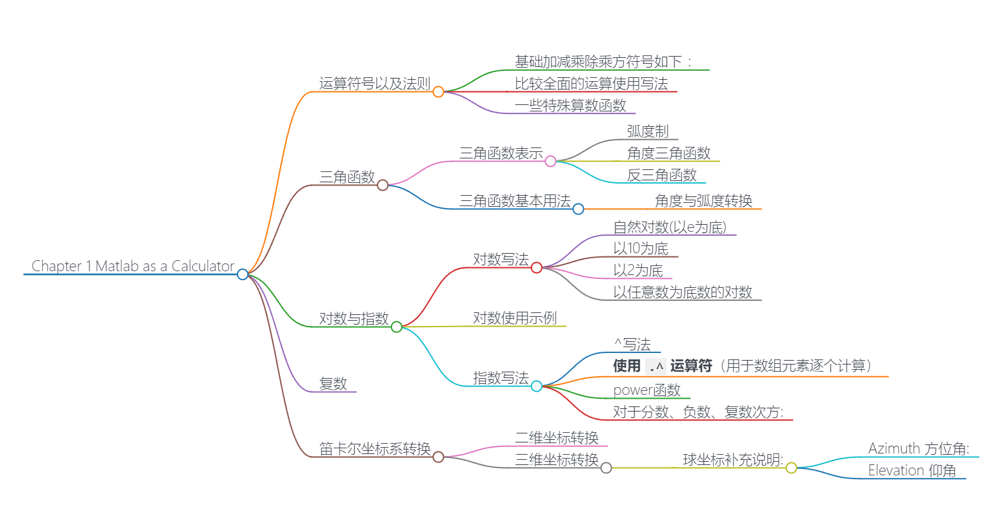
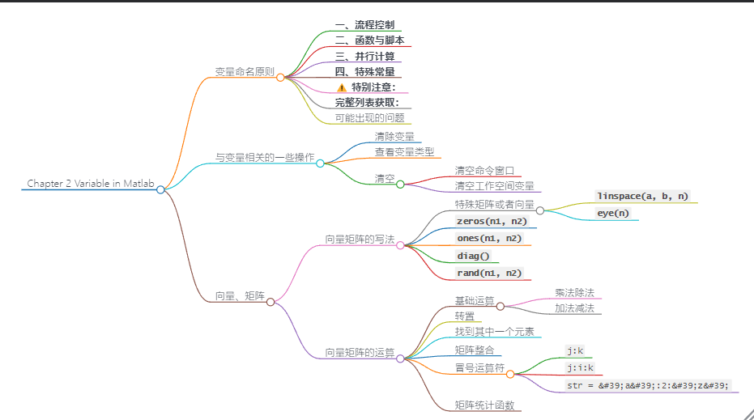
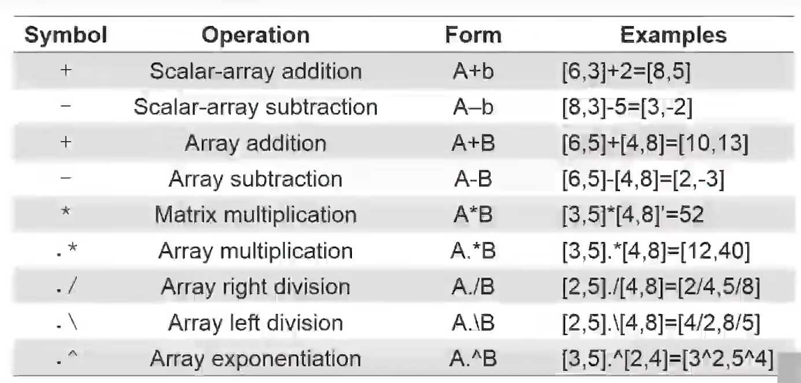
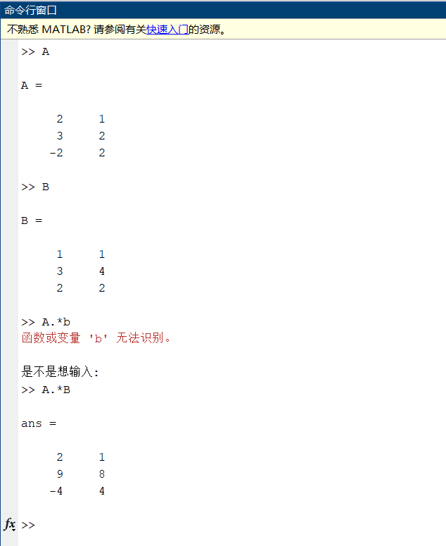
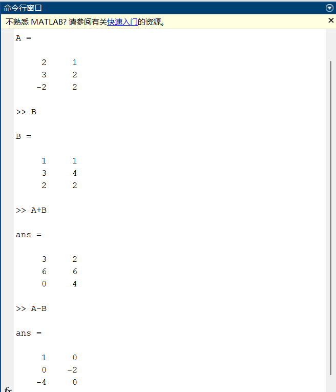
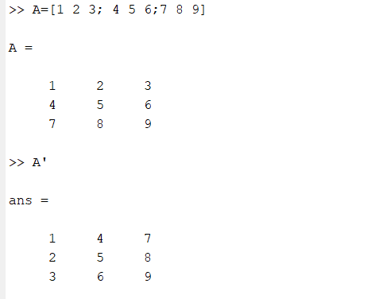
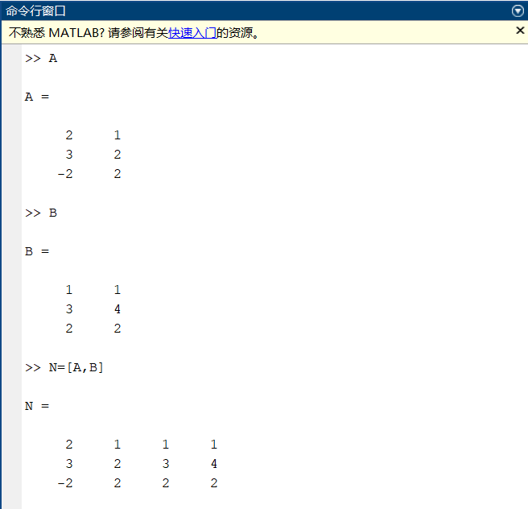
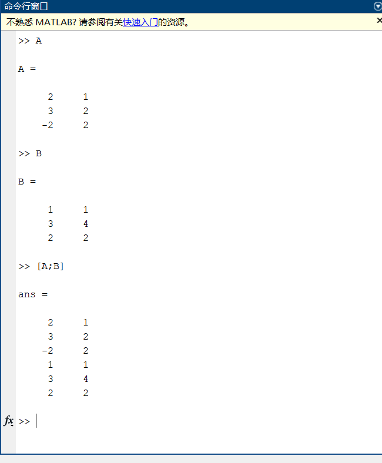
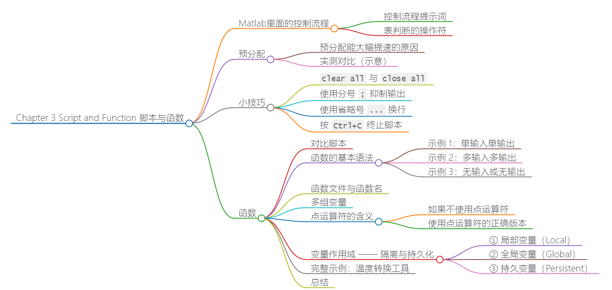

Chapter 1 Matlab as a Calculator
——罗雪芮 2026.2.1-2.8

Chapter1 运算符号以及法则
基础加减乘除乘方符号如下 ：
|
|
比较全面的运算使用写法
|
|
一些特殊算数函数
|
|
- 运算的优先级和普通运算一样，()依旧适用
- 三角函数符号依旧适用，比如 cos（详细见下）
- 输入完想计算的公式之后，按Enter之后会出现 ans，ans输出的就是计算结果
三角函数
三角函数表示
Matlab中的三角函数使用的是弧度制，如果需要使用角度制，可以使用以d结尾的函数
弧度制
|
|
ps:复数输入也有效（如 sin(3+4i)）
举例: $$ cos(\sqrt\frac{(1+2+3+4)^3}{5}) $$
则在matlab当中应当写为:
|
|
其中根号写成$sqrt$
ps:$\pi$在matlab里面写成pi
角度三角函数
|
|
也即是在原基础上加一个d
反三角函数
|
|
-
此处着重说一下$atan(x)$和$atan2(y,x)$
atan求出的角范围是==弧度 [-π/2, π/2]==，而atan2(y,x)求出的角范围是==弧度 [-π, π]==，atan2的作用在于:
|
|
总而言之，atan2(y,x) 比 atan(y/x) 更稳定，能正确处理所有象限
- 同理，这里反三角函数也是返回弧度，如果要返回角度就加d，比如asind(x)这样
三角函数基本用法
角度与弧度转换
|
|
-
deg2rad()是MATLAB内置函数，将角度转换为弧度利用这个易知，下面两者等效
1 2result1 = sin(deg2rad(30)); % 方法1 result2 = sind(30); % 方法2
对数与指数
对数写法
自然对数(以e为底)
|
|
以10为底
|
|
以2为底
|
|
以任意数为底数的对数
MATLAB没有直接提供任意底数的对数函数，需要通过换底公式：
|
|
对数使用示例
|
|
指数写法
主要方法有两种，即使用^符号或者power()函数
^写法
|
|
使用 .^ 运算符（用于数组元素逐个计算）
|
|
power函数
- 对于一般数和数组而言:
|
|
-
对于矩阵而言:
1 2 3 4 5 6 7% 对于方阵，^ 表示矩阵乘方（矩阵自乘n次） A = [1, 2; 3, 4]; result = A^2; % 相当于 A * A % 对于非方阵或元素逐个计算，使用 .^ A = [1, 2; 3, 4]; result = A.^2; % 每个元素平方：[1,4;9,16]
对于分数、负数、复数次方:
|
|
复数
|
|
举例如下:
|
|
笛卡尔坐标系转换
二维坐标转换
|
|
其实主要用到的函数是:
- $cart2pol$ 用于把(x,y)的直角坐标系坐标转化为(角度(theta),模长(rho))的极坐标系坐标
- $pol2cart$ 用于把极坐标转直角坐标
- pol对应极坐标，cart对于直角坐标，2即为to
三维坐标转换
|
|
球坐标补充说明:
Azimuth 方位角:
定义:在x-y平面内，从正x轴沿逆时针方向旋转到点在x-y平面上投影的角度
- 范围：通常为
[-π, π]弧度（在MATLAB中）或[0, 2π]弧度 - 符号约定：
- 0 rad：指向正x轴方向
- π/2 rad（90°）：指向正y轴方向
- π rad（180°）：指向负x轴方向
- -π/2 rad（-90°）：指向负y轴方向
|
|
Elevation 仰角
定义：从x-y平面到点的垂直角度（与x-y平面的夹角）。
- 范围：
[-π/2, π/2]弧度（或[-90°, 90°]） - 符号约定：
- 0：点在x-y平面上
- 正值：点在x-y平面上方
- 负值：点在x-y平面下方
|
|
Chapter 2 Variable in Matlab
——罗雪芮 2026 2 10

Chapter2 变量命名原则
在MATLAB中，以下关键词具有特殊含义，不能用作变量名：
一、流程控制
- if、else、elseif、end - 条件语句
- switch、case、otherwise - 多分支选择
- for、while - 循环
- break、continue - 循环控制
- try、catch - 异常处理
- return - 函数返回
二、函数与脚本
- function - 定义函数
- classdef、properties、methods、events、enumeration - 面向对象编程
- global、persistent - 变量作用域
三、并行计算
- parfor、spmd - 并行计算工具箱
四、特殊常量
- true、false - 逻辑值
- inf、NaN - 特殊数值（无穷大、非数字）
- pi - 圆周率π（虽不是关键词，但强烈建议不要覆盖）
⚠️ 特别注意：
- i 和 j：默认表示虚数单位，但可以被覆盖（覆盖后失去原义）
- ans：最近一次计算结果（非关键词但应避免使用）
- end：还可作为索引（如
A(end)），但仍是关键词
完整列表获取：
|
|
可能出现的问题
|
|
本来cos是余弦，但是这里我们定义它为一段字符串，就会导致我们定义的优先级高于原本设置的函数cos，ans就会输出这串字符的第八位，也就是r
与变量相关的一些操作
清除变量
如果不小心使用了上一个板块提到的关键字，我们需要消除这个变量
|
|
也就是clear后面直接加要清除的变量名
查看变量类型
|
|
|
|
清空
清空命令窗口
- 功能： 清除命令窗口中显示的所有输出内容
特点：
- 只清除显示，不影响工作空间变量
- 不删除命令历史（仍可用↑键查看之前命令）
|
|
清空工作空间变量
|
|
向量、矩阵
向量矩阵的写法
-
行矩阵
1a=[1 2 3 4]- 使用方括号[]，其次，每个数之间有一个空格
-
列向量
-
1b=[1；2；3；4]彼此之间用分号；隔开
写出来的效果大概是:
1 2 3 4 5b= 1 2 3 4
-
-
一个一般一点的矩阵
1A=[1 2 3;4 5 6;7 8 9]- 简单来说就是同一行的中间是空格
- 不同行的中间用分号隔开
特殊矩阵或者向量
linspace(a, b, n)
|
|
结果是:
|
|
eye(n)
生成一个 n×n 的单位矩阵（对角线上为 1，其余为 0）。
示例：
|
|
结果：
|
|
zeros(n1, n2)
生成一个 n1×n2 的全零矩阵。
示例：
|
|
结果：
|
|
ones(n1, n2)
生成一个 n1×n2 的全一矩阵。
示例：
|
|
结果：
|
|
diag()
有两种常见用法：
- 提取对角元素：
diag(A)提取矩阵A的对角线元素为向量。 - 生成对角矩阵：
diag(v)将以向量v为对角线生成一个对角矩阵。
示例：
|
|
结果：
|
|
rand(n1, n2)
生成一个 n1×n2 的矩阵，其元素为均匀分布在 [0,1] 之间的随机数。
示例：
|
|
可能的结果（每次运行不同）：
|
|
向量矩阵的运算
基础运算

乘法除法
|
|
要注意矩阵相乘不能交换顺序，结果会不一样
- 有一种比较特殊的乘除法，是对应位置相乘作为新矩阵该位置的值，比如:
|
|

加法减法

即:
|
|
转置

找到其中一个元素
-
对于单行或者单列的矩阵，找某个元素直接使用()即可，比如
-
1 2A=[1 2 3] A(2) %这个就直接表示找第二个元素，也就是2，最后ans输出也是2 -
但是对于一般一点的就不一样了
-
比如:
-
1 2 3A= 1 21 6 5 17 9 4 87 0 -
(那个大括号我没法打将就看)
-
则任然可以用(),不过是(行，列)这样的格式，比如A（1，2）就是A矩阵第一行第二列的元素，也就是21
-
不过也可以用A（）一个数字表示，每个元素对应的数字是这样排序的:先数第一列，1对应1，5对应2，4对应3，再数第二列，以此类推
-
总结如下:
-
1 2 3 4 5 6A(8) 第八个元素 A（[1 3 5]) 和上面的方法一样，相当于A（1)A（2)A(3)，输出三个数 A（[1 3； 1 3]) 相当于做了一个矩阵，第一行是A矩阵的1 3号元素，第二行是A 矩阵的1 3号元素 A(3，2) 第三行第二列 A([1 3],[1 3]) 构成的矩阵第一列第一个是A(1),第一列第二个是A(3)，然后 是第二列第一个是A(1),第二个是A(3) A(3,) 表示第三行
矩阵整合

想让A与B直接并列整合，可以使用:
|
|

如果想让A和B竖着整合，可以使用:
|
|
，是横向
；是纵向
冒号运算符
j:k
生成从 j 到 k，步长为 1 的整数序列。
例如：
|
|
输出
|
|
j:i:k
生成从 j 开始，步长为 i，直到不超过 k 的序列。
例如:
|
|
输出:
|
|
str = 'a':2:'z'
字符序列，从 'a' 开始，每隔一个字符取一个，直到 'z'：
|
|
矩阵统计函数
max(A)
返回矩阵 每一列的最大值 组成的行向量
-
max(max(A))先求每列的最大值，再求这些最大值中的最大值，即 整个矩阵的最大值
-
min(A)返回矩阵 每一列的最小值 组成的行向量
-
sum(A)返回矩阵 每一列的和 组成的行向量
-
mean(A)返回矩阵 每一列的均值 组成的行向量
-
sort(A)对 每一列进行升序排序，返回排序后的矩阵
|
|
-
sortrows(A)按行排序：以第一列为基准，对整个行进行升序排序
1 2 3 4 5>> sortrows(A) ans = 0 5 6 1 2 3 7 0 9 -
size(A)返回矩阵的 行数和列数
1 2 3>> size(A) ans = 3 3 -
length(A)返回矩阵 最大维度的长度。对于矩阵，相当于
max(size(A)) -
find(A)返回矩阵中 所有非零元素的线性索引（按列的顺序）
Chapter 3 Script and Function 脚本与函数
——罗雪芮 2026 2 11

Chapter3 Matlab里面的控制流程
控制流程提示词
| 控制流 | 说明 |
|---|---|
if, elseif, else |
条件为真时执行语句 |
for |
按指定次数重复执行语句 |
switch, case, otherwise |
执行若干组语句中的一组 |
try, catch |
执行语句并捕获引发的错误 |
while |
条件为真时重复执行语句 |
break |
终止 for 或 while 循环的执行 |
continue |
将控制权传递给 for 或 while 循环的下一次迭代 |
end |
终止代码块，或指示最后一个数组索引 |
pause |
暂时停止执行 |
return |
将控制权返回到调用函数 |
-
if,elseif,else—— 最基础的条件分支。根据逻辑条件（真/假）决定执行哪一段代码。-
1 2 3 4 5 6 7if condition1 statement1 else condition2 statement2 else statement3 end
-
-
for—— 已知循环次数的迭代结构，通常用于遍历数组或固定步长的重复操作。 -
switch,case,otherwise—— 多分支选择结构，比一连串elseif更清晰，特别适合根据某个表达式的具体值进行不同处理。 -
try,catch—— 异常处理机制。将可能出错的代码放在try块中，一旦出错，控制权立即转到catch块，避免程序崩溃。 -
while—— 条件式循环，每次迭代前检查条件，条件为假时退出。适合循环次数不确定的场景。 -
break—— 强行跳出当前循环（for或while），不再执行剩余迭代。 -
continue—— 跳过本次循环的剩余语句，直接进入下一次迭代判断。 -
end—— MATLAB 中必须的块结束标记，用于结束if、for、function等；在索引时也表示最后一个元素（如end在A(end)中）。 -
pause—— 暂停程序运行，可指定秒数，常用于动画演示或等待用户操作。 -
return—— 退出当前函数，返回到调用它的工作区。在主脚本中使用return会直接终止脚本。
表判断的操作符
| 运算符 | 含义 |
|---|---|
< |
小于 |
<= |
小于等于 |
> |
大于 |
>= |
大于等于 |
== |
等于 |
~= |
不等于 |
&& |
与 |
| ` |
预分配
对比一下两种代码:
ps: tic toc分别在开始和结尾，表示计时开始和计时结束，用于比较两者在matlab里面花费时间的长短
|
|
|
|
第二个代码预先分配了矩阵内存（A = zeros(2000, 2000);），第一个代码没有预分配，这是使得第二个运行速度更快
预分配能大幅提速的原因
-
MATLAB 数组必须存储在连续的内存块中 如果事先不知道数组大小，在循环中动态添加元素，MATLAB 会反复执行以下操作：
- 发现当前数组空间不足；
- 重新申请一块更大的连续内存；
- 将已有数据全部复制到新内存；
- 释放旧内存；
- 再写入新元素。
-
动态增长的代价 左边代码开始时
A根本不存在，第一次赋值A(1,1)=2时创建了一个 1×1 的矩阵 随着ii、jj增大，MATLAB 需要不断扩展矩阵的尺寸，每次扩展都可能触发完整的数据复制 即使现代 MATLAB 采用了一些优化（如增量扩展策略），这种反复分配/复制的开销依然远大于一次性分配。 -
预分配如何避免开销 右边代码用
zeros一次性申请好 2000×2000 的连续内存（约 32 MB 双精度数）。 后续循环只是向已分配好的内存位置写入数值，没有重新分配和复制，只有纯粹的赋值操作。
实测对比（示意）
| 代码 | 2000×2000 典型耗时 | 主要开销 |
|---|---|---|
| 无预分配（左边） | 约 0.3~0.6 秒 | 反复内存分配+复制 |
| 有预分配（右边） | 约 0.02~0.05 秒 | 仅赋值操作 |
小技巧
clear all 与 close all
At the beginning of your script, use command
clear allto remove previous variables
close allto close all figures
作用：
clear all：清除工作区（Workspace）中的所有变量、全局变量、编译过的函数、持久变量以及类定义。close all：关闭所有打开的图形窗口（Figure）。- 写脚本时希望“从头开始”，避免之前运行残留的变量影响当前脚本的结果。
⚠️ 重要警告（现代 MATLAB 不建议使用 clear all）：
clear all不仅清除变量，还会清除已编译的函数缓存（包括内置函数的即时编译结果），导致后续代码运行变慢。- 它会移除断点，干扰调试。
- 它会清除类定义，如果后续代码使用面向对象编程，需要重新加载类。
✅ 推荐做法：
- 只清除必要的变量：
clear variables或直接clear（清除所有变量，但保留函数、类等）。 - 更安全：将脚本改写成函数。函数的工作区是独立的，不会污染全局，也不需要手动清理。
- 如果非要清理，用
clearvars -except保留想保留的变量。 close all按需使用，通常放在脚本开头没问题。
使用分号 ; 抑制输出
Use semicolon ; at the end of commands to inhibit unwanted output
作用：
MATLAB 每条语句执行后，默认会在命令窗口显示结果。加上分号可阻止这种显示。
示例：
|
|
注意：分号不影响计算结果，只是不打印。
使用省略号 ... 换行
Use ellipsis … to make scripts more readable
示例：
1 2A = [1 2 3 4 5 6; ... 6 5 4 3 2 1];
作用： 将一条长语句分成多行，增强可读性。
使用规则：
...必须放在行尾，表示下一行是当前行的继续。- 不能将
...放在字符串内部来换行（例如'abc...def'会直接当作字符串内容）。 - 常用于构建长矩阵、长函数调用、复杂表达式等。
示例：
|
|
注意：如果一行末尾已经是完整的语句，不需要 ...；只有需要续行时才用。
按 Ctrl+C 终止脚本
Press
Ctrl+Cto terminate the script before conclusion
作用： 强制中断正在运行的 MATLAB 脚本或命令。
使用场景：
- 脚本陷入死循环。
- 运行时间远超预期，想提前停止。
- 误执行了大型计算。
机制：
Ctrl+C 会向 MATLAB 发出中断信号，通常在当前执行完一个“可中断点”后停止。对于纯 M 代码循环，通常能很快响应；但如果遇到不可中断的内置函数（如大型稀疏矩阵分解），可能需要稍等。
提示：
在长时间循环中，可主动调用 drawnow、pause(0) 或 figure 等函数，提高对 Ctrl+C 的响应速度。
函数
定义:将一组命令封装成一个独立单元，给定输入、返回输出，并拥有独立工作区
对比脚本
| 特征 | 脚本（Script） | 函数（Function） |
|---|---|---|
| 工作区 | 共享基础工作区（Base Workspace） | 独立工作区，内部变量不污染外部 |
| 输入/输出 | 无强制输入输出，操作全局数据 | 明确输入参数和返回值 |
| 速度 | 每次运行重新解析 | 首次调用后即时编译（JIT），后续快 |
| 应用场景 | 一次性分析、快速试验 | 封装算法、模块化、重复调用 |
函数的基本语法
|
|
示例 1：单输入单输出
|
|
调用：a = square(5); → a = 25
示例 2：多输入多输出
|
|
调用：[s, d] = add_subtract(10, 3); → s=13, d=7
示例 3：无输入或无输出
|
|
调用：print_hello()
函数文件与函数名
- 函数通常定义在以
.m结尾的文件中，文件名必须与主函数名相同（例如square.m包含function square(...)）。 - 一个
.m文件中可以包含多个函数：- 主函数：文件名与主函数名一致，外部可调用。
- 子函数：主函数之后定义，只能被同一文件中的其他函数调用。
- 嵌套函数：在函数内部定义，可访问外层函数的变量。
多组变量
| 函数/变量名 | 说明 |
|---|---|
inputname |
返回函数输入变量的名称 |
mfilename |
返回当前正在执行的函数文件名 |
nargin |
函数调用时实际传入的输入参数个数 |
nargout |
函数调用时实际请求的输出参数个数 |
varargin |
可变长度输入参数列表（元胞数组） |
varargout |
可变长度输出参数列表（元胞数组） |
inputname返回函数调用时，第几个输入变量在调用工作区中的变量名（以字符串形式）。常用于在错误提示中告知用户哪个变量有问题。
|
|
这里test是函数名，(X)表示至少输入一个变量，而这个函数的功能就是下面几行，第二行有一个变量定义为input ，它的值是inputname(1)， 这里inputname(x)是MATLAB 内置函数，返回函数调用时第1个输入参数在调用者工作区中的变量名，这里x=1，表示取第一个输入参数。第三行会打印出这个name，也就是变量名
调用 a = 10; test(a) 会输出“输入的变量名是：a”
mfilename返回当前正在执行的函数文件名（不包含扩展名.m）。若在脚本中调用则返回空字符串。可用于日志记录或确定函数所在路径。
|
|
调用 myfunc() 输出“当前函数名：myfunc”。
nargout函数内部使用，返回调用时实际请求的输出参数个数。可根据用户需求决定返回哪些结果。
|
|
调用 m = stats([1,2,3]) 只返回均值；[m, s] = stats([1,2,3]) 同时返回均值和标准差。
varargin可变长度输入参数列表，是一个元胞数组。用于处理输入参数数量不确定的情况。
|
|
调用 sum_all(1,2,3,4,5) 返回 15；sum_all(10,20) 返回 30。
varargout可变长度输出参数列表，也是元胞数组。用于返回数量不确定的输出结果。
|
|
调用 [a,b] = multi_disp(5,7) 得到 a=10, b=14。
- nargin
|
|
如果遇到输入有多个变量，会使用nargin去确认输入变量个数，如果向上面这样，本来要3个变量但只输入了两个，那么就让height等于1
点运算符的含义
| 运算符 | 含义 | 示例 | 说明 |
|---|---|---|---|
* |
矩阵乘法 | A * B |
要求内维匹配，结果按矩阵乘法 |
.* |
对应元素相乘 | A .* B |
对应位置元素相乘，尺寸一致 |
/ |
矩阵右除 | A / B ≈ A * inv(B) |
求解线性方程组，通常不是逐元素 |
./ |
对应元素相除 | A ./ B |
对应位置元素相除，尺寸一致 |
核心：在大多数工程计算中，我们希望函数对输入的每一个元素独立地进行相同的运算，而不是进行矩阵代数运算。这时必须使用 .* 和 ./。
如果不使用点运算符
假设我们写了一个错误的版本，用矩阵除法 /：
|
|
|
|
MATLAB 会报错：
|
|
因为 (v2-v1) 是 1×2 向量，(t2-t1) 也是 1×2 向量，矩阵除法要求第二个矩阵是方阵或满足特定维度规则，这里显然不满足，直接崩溃。
即使不崩溃，结果也完全不是你想要的。例如：
|
|
矩阵除法 [10,15] / [1,3] 实际上求解 x * [1,3] = [10,15]，得到一个标量 x = 4.1667，不是逐元素相除。
使用点运算符的正确版本
|
|
现在传入同样的向量：
|
|
输出：
|
|
完全符合预期：第一组数据得到 10，第二组得到 5
变量作用域 —— 隔离与持久化
① 局部变量（Local）
函数内定义的变量默认是局部的，仅在函数执行期间存在，不干扰基础工作区。
② 全局变量（Global）
用 global 声明，可在多个函数和基础工作区共享。谨慎使用，易导致代码耦合。
|
|
调用前需在所有相关函数中声明 global COUNT。
③ 持久变量（Persistent）
用 persistent 声明，函数多次调用间保留值，类似静态变量。
|
|
持久变量一般结构如上，首先是函数的基本结构，也就是第一行function＋输出＋=＋函数名(输入)，第二行声明持久变量的时候要用前缀persistent，又因为持久变量在第一次调用函数时是空的（[]），必须手动初始化，所以有isempty的判断，标准写法如下:
|
|
放到这里可以理解为，一开始由于声明的是一个持久变量，所以初始值是空(注意不是0)，这时候isempty就会发挥作用，给他附上初始值var,可以在下一行写出具体的var是多少
之后每次调用我们声明的这个持久变量，都会保留上一次的值，比如现在就不是空了，是0，就会执行c=c+1这一行
每次调用 counter() 返回递增序号，c 不会清零
但是普通的全局变量就不一样，比如下面这个例子:
|
|
第一次运行 myFun()，显示 2
第二次运行，还是 2 —— 因为每次函数执行完，变量 x 就被销毁了，下一次重新从 x = 1 开始
这就是普通局部变量：每次调用函数，它都“从零开始”。
完整示例：温度转换工具
文件 temp_converter.m
|
|
调用：
|
|
总结
| 概念 | 一句话要点 |
|---|---|
| 基本语法 | function [输出] = 函数名(输入) |
| 工作区 | 独立，局部变量默认不共享 |
| 子函数 | 同一文件中，主函数后定义，仅文件内可见 |
| 嵌套函数 | 函数内定义，可访问外层变量 |
| 全局/持久变量 | 谨慎使用；持久变量保留调用间状态 |
| 函数句柄 | 指向函数的引用，可传递、调用 |
| 可变参数 | varargin / varargout 处理不定量输入/输出 |